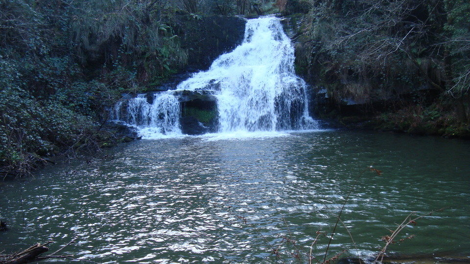

VALLE EN V
Def.: Los valles en V predominan en el curso alto,
se producen por la erosion que provoca el rio en el fondo.
Def.: Las cascadas y rapidos
son fuertes desniveles que existen en las altas montañas y hacen que los rios presenten estas formas.

CASCADAS Y RÁPIDOS
